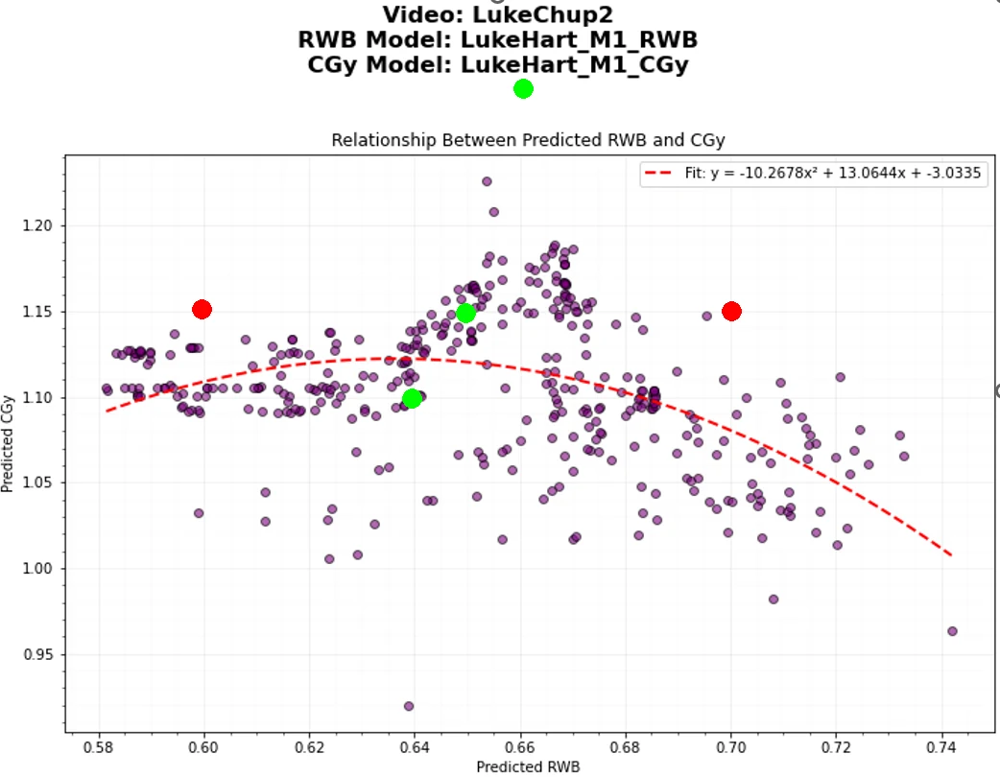
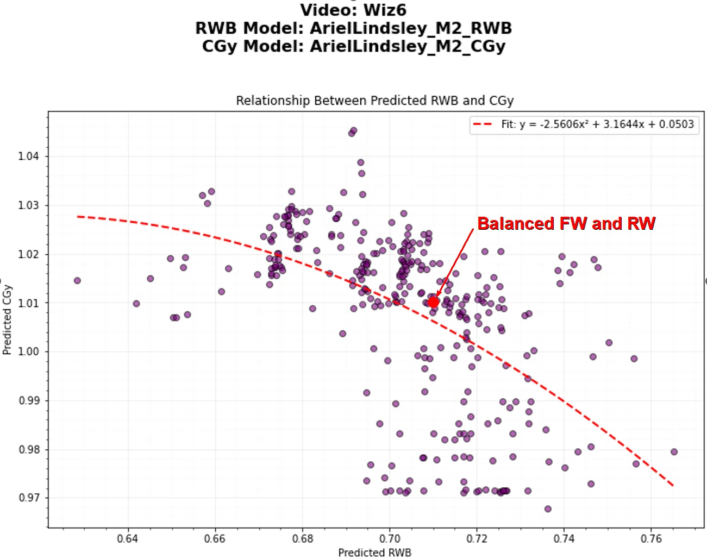
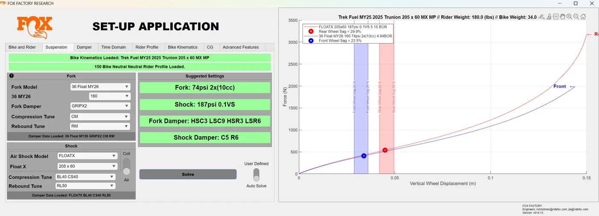

Digital Products & Research
The most ambitious thread in my work: turning suspension setup from opinion into something you can define, measure, and reproduce. It pairs a mechanical model of the bike with an AI vision system that reads the rider — and the two together produced a result I believe is new to the industry.
For decades, setting up a mountain bike's suspension has been guided by sag charts and feel — an opinion rather than an informed decision. This project set out to answer what an ideal setup actually is, and why ideal varies so much from rider to rider.
I built two things. The first is a software model that simulates how any fork and shock behaves on any bike for any rider — how firm it is, how quickly it settles, and how well front and rear are matched. The second is a measurement system built around a GoPro and a pose-tracking AI that determines, frame by frame, a rider's weight distribution and center of gravity while they ride.

Putting the two together produced the central finding. An experienced rider continuously balances the bike with their body: as a trail steepens they shift rearward, keeping a familiar load on the front and rear contact patches — in effect keeping the front and rear suspension responding at the same rhythm. Across riders on different bikes with deliberately different setups, each one moved to a position that produced the same balanced natural-frequency response.
The rider is the missing variable. The setup and the rider's body act as one system, and a good setup is simply one the rider can keep in balance across the trails they actually ride.


A random-forest regressor predicts rear-wheel bias and rider-system CG height from the five torso metrics, calibrated against a pair of wheel scales, reaching coefficients of determination of 0.9 to 0.95. A multi-rider trail study across three trails of very different gradient (4.5%, 12.5%, and 42%) confirmed the behavior repeatedly. As far as I'm aware, this is the first time this rider behavior has been measured directly and tied to a working setup model — packaged in a MATLAB App Designer tool.

The work was written up as a formal engineering paper — A Single-Degree-of-Freedom Model and Computer-Vision Methodology for Mountain Bicycle Suspension Set-Up — and presented internally. The full paper is linked above.